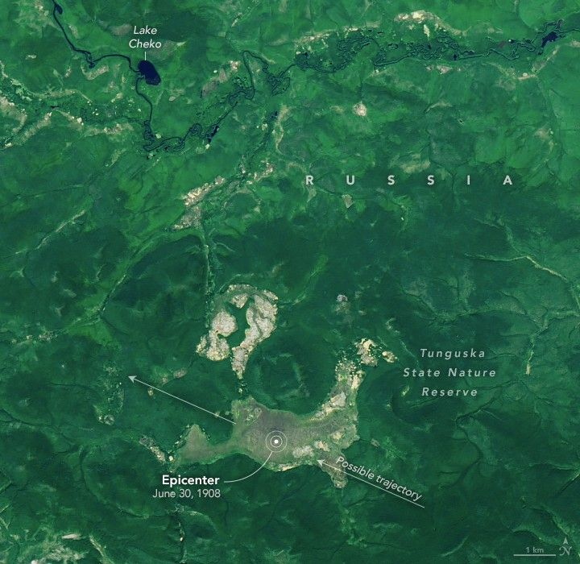

Earth’s Clouds on the Move
For much of his career, George Tselioudis, a researcher at NASA’s Goddard Institute for Space Studies, has analyzed decades of satellite observations to understand where clouds occur, whether their distribution has changed, and how changes might affect Earth’s energy budget and climate. The implications of two of his recent studies, he says, are worrying.
Clouds are common on Earth, but they are ephemeral and challenging to study. Remote sensing has helped scientists tremendously by enabling consistent, global tracking of the elusive features, even over inaccessible areas like the poles and open ocean.
The first study, published in August 2024, showed that Earth’s cloudiest zones over the oceans have shifted and contracted over the past 35 years, allowing more of the Sun’s energy to reach and warm the ocean instead of being reflected back to space by storm clouds. “The pattern is clear. Where storm clouds form has changed,” Tselioudis said. The implications for the climate, he added, are significant: “This has added a large amount of warming to the system.”
The analysis focused on three major storm zones: a band of thunderstorms near the equator known as the ITCZ (Intertropical Convergence Zone), and two broader mid-latitude zones in the northern and southern hemispheres between roughly 30 and 60 degrees latitude, where comma-shaped storm systems—sometimes called extratropical cyclones—swirl over the oceans.
The illustration at the top of the page depicts where clouds typically form, based on several years (2002-2015) of averaged cloud fraction observations from the MODIS (Moderate Resolution Imaging Spectroradiometer) sensor on NASA’s Aqua satellite. Stormy areas where the sensor observed clouds more frequently are shown with white; less cloudy areas appear in shades of blue.
A blue and white chart shows how the distribution of clouds has changed between 1984 and 2018, according to satellite observations. A band of thunderstorms near the equator called the ITCZ has narrowed, subtropical dry zones have expanded, and mid-latitude storm zones have contracted and shifted poleward.
Earth’s storm clouds typically form near the edges of certain large-scale atmospheric circulation features—the Hadley, Mid-latitude (also called Ferrel), and Polar cells—where winds converge and air is forced upward. Clouds are less common and less reflective where dry air descends in the subtropics, roughly below 30 degrees north and south of the equator. Though tropical cyclones—hurricanes, typhoons, and cyclones—can reach the subtropics, they do so infrequently. The image below highlights different storm types as seen by the EPIC (Earth Polychromatic Imaging Camera) on the DSCOVR satellite on June 10, 2025.
The new research shows that areas over the ocean where storm clouds often form have contracted by between 1.5 to 3 percent per decade. The ITCZ narrowed, and the mid-latitude storm zones moved poleward as they contracted. Meanwhile, subtropical zones with fewer clouds expanded.
These changes are depicted in the chart above: white areas show where storm clouds were common, and shades of blue indicate less cloudy areas. The trend line colors depict the degree of cloudiness. Areas that were cloudy 85 percent or more of days are bounded by black dotted lines. Drier areas that were cloudy on 65 percent or less of days are bounded by white dotted lines. The chart is based on data from the combined record of several geostationary and polar-orbiting satellites that are part of the ISCCP (International Satellite Cloud Climatology Project).
In a second analysis published in May 2025, Tselioudis and colleagues examined the effect of these cloud changes on Earth's energy budget. They found that the shift increased the amount of energy absorbed by the oceans by about 0.37 watts per square meter per decade—a substantial amount on a planetary scale.
A satellite image of Earth shows thunderstorms near the equator and a sprawling comma-shaped extratropical cyclone over the North Atlantic Ocean on June 10, 2025.
Past analysis of data from NASA’s CERES (Clouds and the Earth’s Radiant Energy System) instruments has shown that since 2005, there has been an increase of 0.47 watts per square meter per decade in the amount of solar energy Earth absorbs compared to the amount that exits as thermal infrared radiation. This increase is part of a growing energy imbalance—a more than doubling since 2001—that has heated the oceans and contributed to global warming.
While the accumulation of greenhouse gases in the atmosphere and changes in sea ice cover explain a portion of that imbalance, pinpointing how much other processes have contributed has been a source of uncertainty and debate among scientists. Changes to airborne particles, the reflectivity of land surfaces, clouds, and oceans are among several possible factors that may be contributing to the growing energy imbalance.
These new findings suggest that the loss of oceanic storm clouds is a key driver of the imbalance, Tselioudis said. He describes the loss of the reflective clouds detailed in his papers as a “crucial missing piece” in the puzzle of the 21st century energy imbalance. He added that this change to clouds is also likely a key reason that unusually warm ocean and global temperatures in 2023 surprised scientists by exceeding expectations so much.
“These findings will provide a key test for the latest generation of climate models to see whether they are getting the right answer for the right reasons,” said Gavin Schmidt, director of NASA’s Goddard Institute for Space Studies.
The big question now, Tselioudis said, is what has caused the reduction in reflective storm clouds and whether the trend will continue. One possibility, long predicted by climate models, is that different rates of warming in the Arctic compared to the equator in recent decades may be expanding the size of Hadley cells and driving the poleward shift of the storm zones.
“We can't prove this yet,” said Tselioudis. “The system is complicated, and other dynamics might be in play.”
The research was published in Climate Dynamics and Geophysical Research Letters. The researchers detected changes in clouds and the energy budget by analyzing data from MODIS, CERES, and ISCCP.